The SWADE rule set allows you to add homebrew choices to most of its selections: powers, weapons, races, and so on. The entry dialog for each type of choice includes fields for all the information particular to that type. For most choices, the values to enter into the dialog can be determined by comparing them to similar choices from the core rule book.
The input fields used to enter homebrew choices are similar to those used by the Quilvyn editor—text fields, selection menus, checkboxes, etc. One difference between the two is that you can enter multiple values into most text boxes in the homebrew choices editor. For example, when entering a homebrew weapon, you may want to enter multiple values in the Era text box. To do this, separate the individual values by commas: Ancient,Medieval. If you ever need to enter a single value that contains a comma into a text box, enclose the value in quotes: "May create and mend magic weapons, armor, and shields".
Although the widest text boxes that Quilvyn uses show around 40 characters, you can enter longer text values. Only 40 characters will show at once, but you can use your arrow keys to move the cursor within the full text. Several examples below show only the beginning portion of longer values entered into text boxes.
Arcanas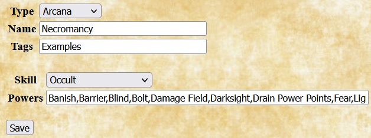 |
The SWADE Quilvyn plugin uses the term arcana to indicate the various types of arcane backgrounds a character might have—Magic, Miracles, Weird Science, etc. When adding a homebrew arcana, Quilvyn provides a field that allows you to enter the arcane skill associated with that arcana. If the arcana limits practitioners to a subset of powers, you can also enter the list of powers available; otherwise, Quilvyn assumes that characters with this arcana may make use of the full set. The example shows the entry for a Necromancy arcana, which uses Occult as its arcane skill and provides access to a limited set of powers. |
Armors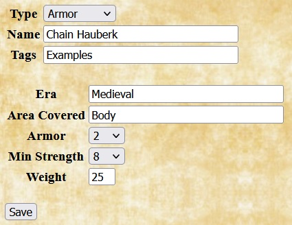 |
When entering a homebrew armor type, Quilvyn provides fields that allow you to enter the optional list of eras (Ancient, Medieval, Modern, and Future) appropriate for the armor, the body areas that the armor covers (one or more of arms, body (torso, arms, and legs), head, legs, and torso), the toughness bonus provided by the armor, the minimum strength required to wear it, and the armor's weight. The example shows the entry for Brigandine armor—a jacket riveted with metal plates. |
Concepts | |
| 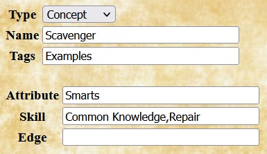 |
For homebrew concepts, Quilvyn provides fields that allow you to enter the most important attributes, skills, and/or edges for characters built around that concept. Quilvyn uses these values when randomly determining information for the character; it will choose the items listed as important to the character concept more often than other alternatives. The example shows the entry for a Scavenger concept. It places high value on the Common Knowledge and Repair skills, both of which are linked to Smarts. |
Edges | |
|
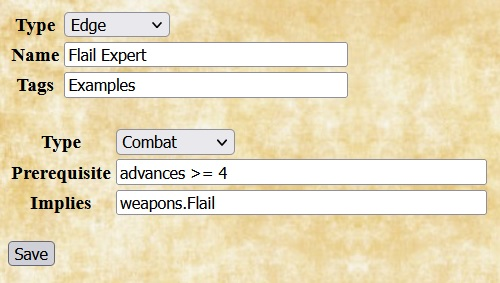
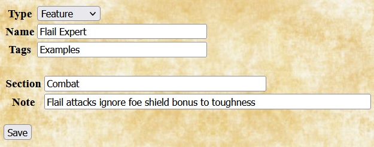 |
For homebrew edges, Quilvyn displays fields to note the edge type and any requirements that must be met to select it. Quilvyn allows you to specify two kinds of requirements for an edge. The Prerequisite box lists any requirements that must be met to select the edge; Quilvyn generates a validation error if the edge is selected for a character who does not meet these requirements. The Implies box lists any requirements that, while not strictly required, make the edge useless if not met. For example, although the rules don't require it, the Ace edge from the SWADE rules is likely to be useless to a character that lacks the Boating, Driving, and Piloting skills. Quilvyn will generate a validation warning if the Implies requirements are not met. When specified, the Prerequisite and Implies fields will normally contain references to character stats; see the discussion of using character stats for how to include these. The effects of an edge are described separately in a feature with the same name. The example shows the entry for a combat edge named Flail Expert. The Prerequisite box notes that it requires at least four advances (i.e., a rank of seasoned or higher), and the Implies box notes that the edge is useless unless the character possesses a flail. The example also shows the corresponding feature that describes the effect of selecting the Flail Expert edge. |
Eras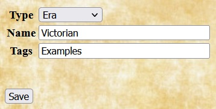 |
Adding a homebrew era requires only specifying the name, although you will likely also want to add weapons, and perhaps armor and skills, that are particular to that era. The example shows the entry for the Victorian era, which might be useful when running a game based on Jules Verne's novels. |
Features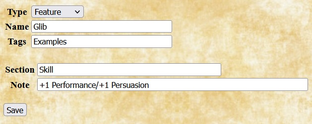 |
In Quilvyn, features describe the effects of edges, hindrances, and racial abilities. When adding a homebrew feature, enter the section of the character sheet (one of arcana, attribute, combat, description, feature, or skill) where the note for the feature should appear, then enter the note text. You can enter multiple sections and notes, but the number of sections entered must equal the number of notes. Feature notes can both reference and modify character stats; see the discussion of using character stats for how to do this. The example shows the entry for a feature named Glib with a note that appears in the skill section of the character sheet. It adds 1 to the character's Performance and Persuasion skills. |
Hindrances | |
|
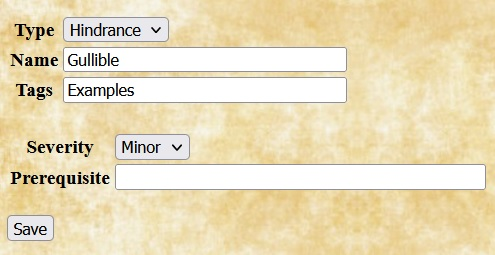
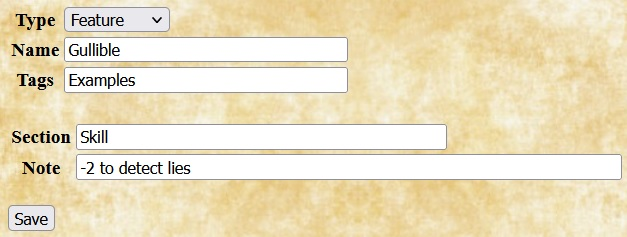 |
Adding a homebrew hindrance requires only specifying the name and the severity (Major or Minor). For major hindrances from the core rules, Quilvyn includes a plus sign at the end of the name to allow for quick identification and to distinguish them from minor hindrances with the same name. You may follow this convention when entering homebrew hindrances, but Quilvyn doesn't require it. Although none of the hindrances from the core rule book have prerequisites that must be met, Quilvyn allows you to add them to homebrew hindrances. For example, you might want to restrict certain homebrew hindrances to characters of a specific race or concept. The example shows the entry for a minor hindrance named Gullible, along with the corresponding feature that describes its effects. |
Powers | |
| 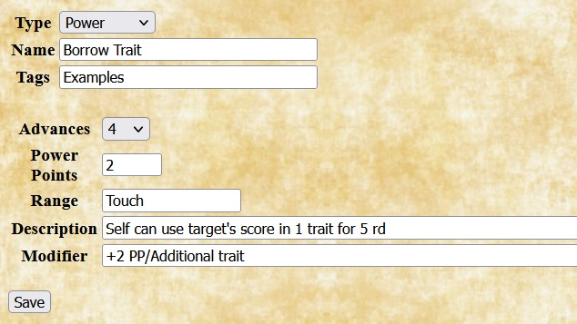 |
When adding a homebrew power, Quilvyn displays fields that allow you to enter the minimum number of advances (i.e., rank) needed to use the power, the number of power points expended when using it, its maximum range, the description of its effects, and any power-specific modifiers that can be applied. Power descriptions and modifiers can embed references to character stats; see the discussion of using character stats for how to include these. As a special form of character stat reference, the Range field for a power may contain the word "Smarts" (or a calculation, such as Smarts/2), which will be replaced on the character sheet with the character's smarts value. The example shows the entry for the a power named Borrow Trait, which is available to seasoned characters and costs 2 power points to cast, plus an additional 2 power points for multiple traits. |
Races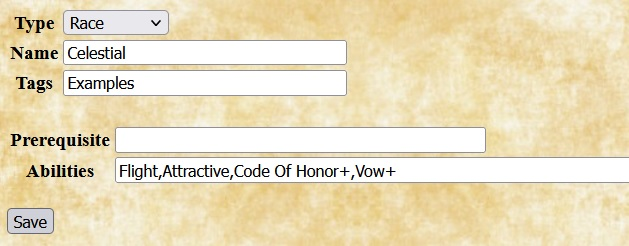 |
For homebrew races, Quilvyn provides a field for listing the racial abilities associated with the race. Quilvyn also allows you to specify prerequisites for homebrew races; for example, you might want to define a race that has a minimum strength requirement. The example shows the entry for the Celestial race, taken from the list of ancestries in the SWADE Fantasy Companion. |
Shields | |
| 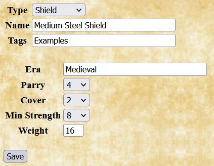 |
When adding a homebrew shield, Quilvyn provides fields for entering the optional list of eras appropriate for the shield, the parry and cover values it provides, the minimum strength required to use it, and its weight. The example shows the entry for a medium steel shield, which provides a greater parry value than a standard medium shield at the cost of requiring a higher strength to use it. |
Skills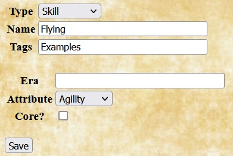 |
When adding a homebrew skill, Quilvyn displays fields for the optional list of eras appropriate for the skill and for the skill's linked attribute. You can also check the "Core" box to indicate that this homebrew skill is a core skill, which means that all characters will automatically start with a d4 in the skill. The example shows the entry for an Appraise skill, linked to Smarts. |
Weapons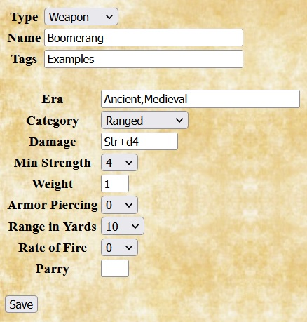 |
When adding a homebrew weapon, Quilvyn displays fields that allow you to enter the optional list of eras appropriate for the weapon, its primary category (Unarmed, One-Handed, Two-Handed, or Ranged), the damage it inflicts, the minimum strength required to use it effectively, its weight, and any armor piercing, range, rate of fire, and parry values it might have. The example shows the entry for a boomerang, a ranged weapon with a 5" range that inflicts Str+d4 damage. |
There are three places that you might want to use references to character stats when adding homebrew choices: prerequisites for homebrew edges, hindrances, and races; in feature notes that modify character stats; and embedded in feature notes and spell descriptions and modifiers. Stat references appear somewhat differently in each of these contexts.
The examples below develop a homebrew edge named Alert Dodger, which allows a character to add half of their smarts to their parry instead of half of their fighting skill. This will be a combat edge, so the initial entry for the edge looks like this:
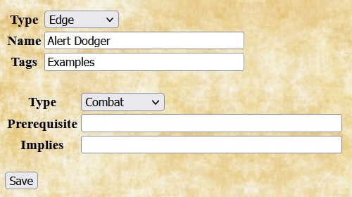In the core rulebook, many edges have prerequisites—stat values that the character must have to take the edge. Quilvyn allows you to specify similar prerequisites when entering a homebrew edge, hindrance, or race.
Since the effects of the Alert Dodger edge come from battle experience, it makes sense to require a minimum experience to take it. We can give the edge a minimum requirement of seasoned rank (i.e., at least 4 advances) by adding text to the edge's Prerequisite field:
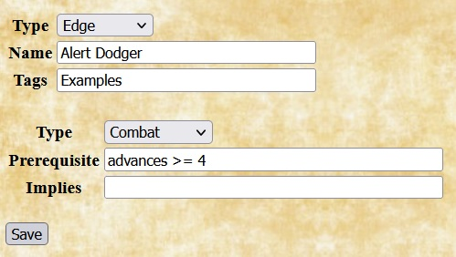Quilvyn will generate tests for this requirement and will show a validation error if a character with fewer then 4 advances is given this edge. You can also specify that the character must have a specific feature as part of your prerequisites. For the Alert Dodger edge, it might be reasonable to require that the character also have the Alertness feature:
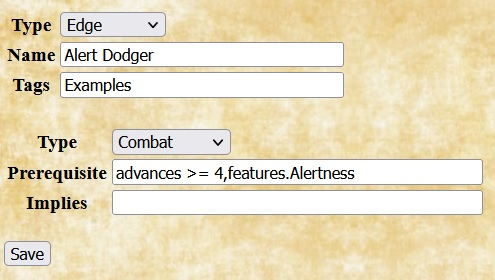Finally, although a high smarts value might not be required to take this edge, it will make little sense to do so unless the character's smarts value is greater than their fighting skill value. This can be specified by adding text to the Implies field:
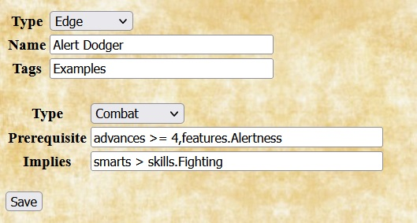Within prerequisites, Quilvyn recognizes the common comparison operators (<, <=, >, >=, ==, !=), and you can use the OR operator (||) to require that at least one of a set of prerequisites is satisfied:
smarts >= 6 || spirit >= 6
When making a comparison to a text value rather than a number, surround the value with single or double quotes. Quilvyn also supports the matching operators =~ (matches) and !~ (does not match) with strings. The first of these two prerequisites requires that the character's origin be Arden Wood, while the second allows any origin with Wood in the name:
origin == 'Arden Wood'
origin =~ 'Wood'
(You can think of the =~ and !~ operators as "contains" and "does not contain", but they actually perform a pattern match, treating their second operand as a regular expression. This means that certain characters, such as * and ?, have special meanings if they appear in the second operand. The Mozilla project provides a web page with a detailed description of regular expressions.)
With the Alert Dodger edge definition complete, the next step is to create the corresponding feature, also named Alert Dodger. This will add the description of the edge to the character sheet and allow Quilvyn to create rules to implement its effects. Since the edge affects a character's parry, its note will fit best in the combat section of the character sheet.
To illustrate how Quilvyn processes feature notes, we'll initially define the Alert Dodger edge to add a fixed +1 to the character's parry, switching later to using the character's smarts value instead.
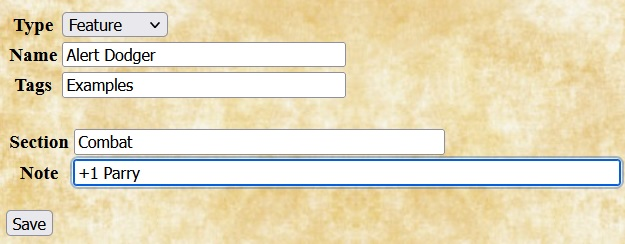Given this definition, Quilvyn will automatically generate a rule that adds one to the character's parry value, and the note will appear in italics on the character sheet. For readability, character stats in feature notes must appear as shown above, with an initial capital letter. If the stat consists of multiple words, each word must be capitalized, and the words must be separated by spaces. For example, a feature that increases a character's armorToughness by one would have a note that reads:
+1 Armor Toughness
Single features can modify multiple stats; in these cases, the note should list the individual modifications separated by slashes. This was shown above in the feature definition example, where the note for the Glib feature reads:
+1 Performance/+1 Persuasion
As shown here, notes in the skill section can affect skill modifiers by referencing the skill name directly; the skills. prefix is not necessary.
Some edges, racial abilities, and powers have effects that vary based on character stats. For example: the Block edge increases the character's parry by one, or by two if the character also has the Improved Block edge; the Aquatic racial ability gives the character a swim speed equal to their pace; and the Light/Darkness power has a modifier that allows the caster to move it each round a number of squares equal to their arcane skill.
You can embed references to character stats in the text of feature notes and power definitions by enclosing them within the characters %{}. Using this ability, the modifier for the Light/Darkness power reads:
+1 PP Attaches to object or moves effect %{arcaneSkill}"/rd
When Quilvyn displays this note on the character sheet, it first replaces the reference to the character's arcaneSkill stat with its value, so the note might appear on the sheet as
+1 PP Attaches to object or moves effect 8"/rd
We can use this ability to replace the fixed +1 entered earlier for the effects of the Alert Dodger feature with an amount equal to the character's smarts value:
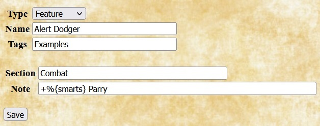Given this note, Quilvyn will automatically generate a rule to add the character's smarts value to their parry value and will display the note in italics.
Recall, however, that we want to add half of the character's smarts value to their parry value, replacing the half of their fighting skill value that is normally added. Beyond simple stat references, Quilvyn supports performing calculations within embedded references. Using this feature, we can update the definition of the Alert Dodger feature to its final form:

As this note shows, individual references can make use of use multiple stats.
Within embedded references, Quilvyn supports the common comparison operators (<, <=, >, >=, ==, !=), the common arithmetic operators (+, -, *, /, unary -), AND (&&), OR (||), matching (=~, !~), and integer division (//). It also supports the ternary if-then-else operator (?:) and the operators <? and >?, which return the smaller and larger of their two operands, respectively. Using these operators, we can define the note for the Tactician feature as follows:
R%{commandRange}\\" May distribute %{combatNotes.masterTactician?2:1} Action Cards to commanded each rd
| Traits | Identity | Combat | Arcana | Edges and features |
|---|---|---|---|---|
|
|
|
|
|